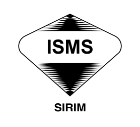
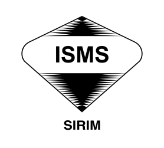

Career
Work Experiences
My work experiences career is centered on IT Security Governance and Compliance, where my primary focus is to protect the organization's digital assets by establishing and enforcing strategic security frameworks. I dedicate my skills at FGV Holdings Berhad to bridging the gap between technical security measures and high-level business goals, ensuring our operations maintain a strong cybersecurity posture and meet regulatory mandates.
Core Responsibilities and Expertise:
My daily work involves the comprehensive execution of GRC principles, requiring collaboration with IT, legal, and executive teams:
- Governance & Audit Experiences: My core responsibility is creating and enforcing policies, frameworks (ISO 27001), and procedures to align IT security with business goals.
- Security Posture Assessment Experiences: Performed comprehensive security assessments across host, database, web and network environments by identifying, exploiting, and documenting vulnerabilities using Burp Suite, Metasploit, Nmap, and Nessus following standardized methodologies like OWASP to provide actionable risk-mitigation strategies.


 

Project Experiences
My involvement in projects demonstrate my hands-on ability to apply theoretical knowledge to practical solutions, often bridging the gap between security and development:
- Lead Security Governance, LHDNM Myinvois
- Lead Change Management, ICCS Mindef
- Lead Auditor ISMS
- Steering Committe FGV Cybersecurity Roadmap Program
- Steering Committe for FGV Cloud Migration